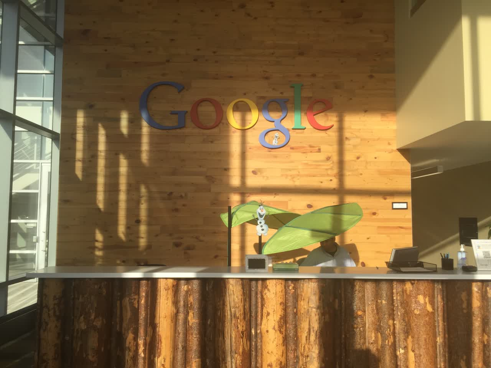
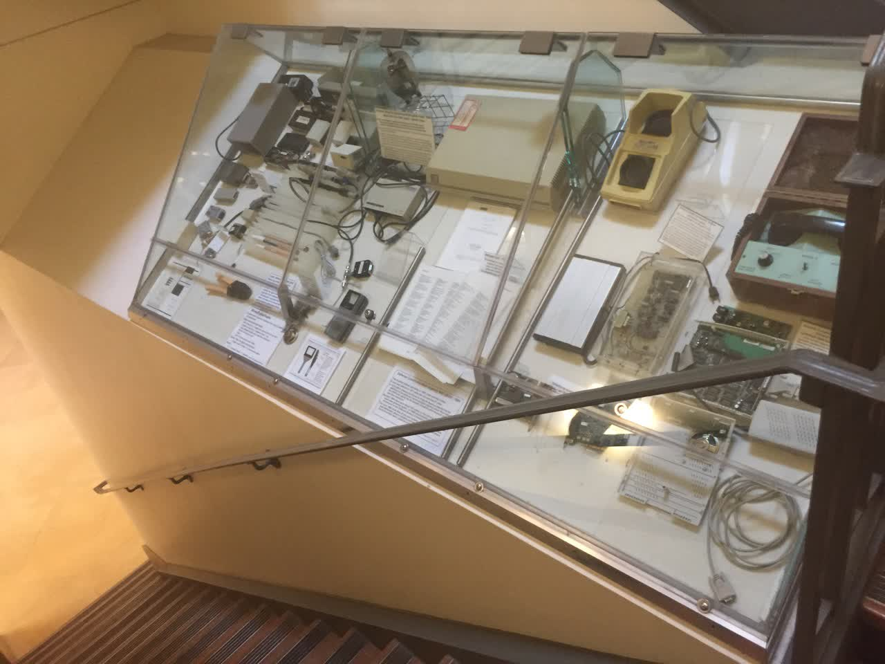
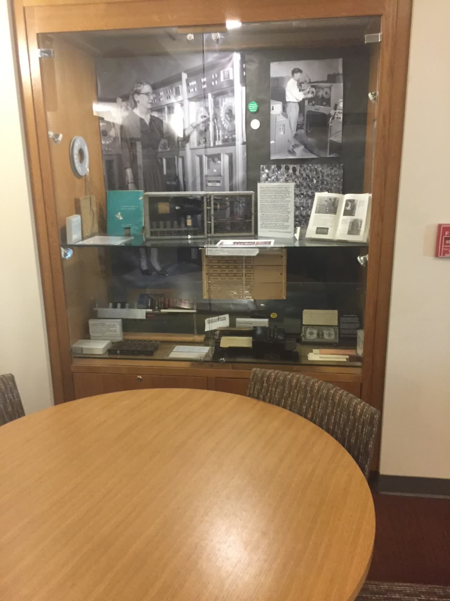
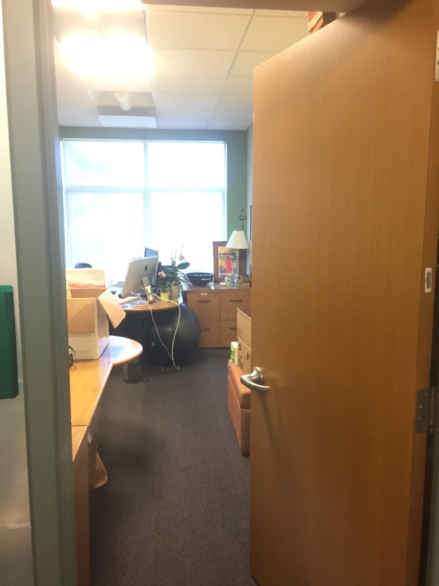
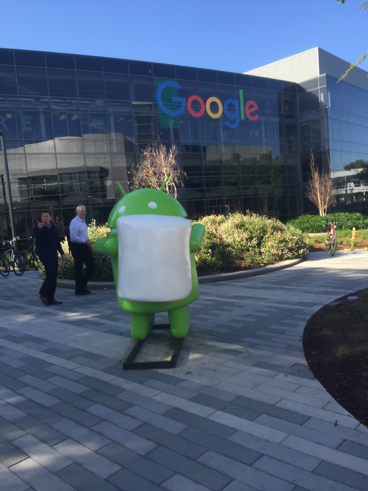
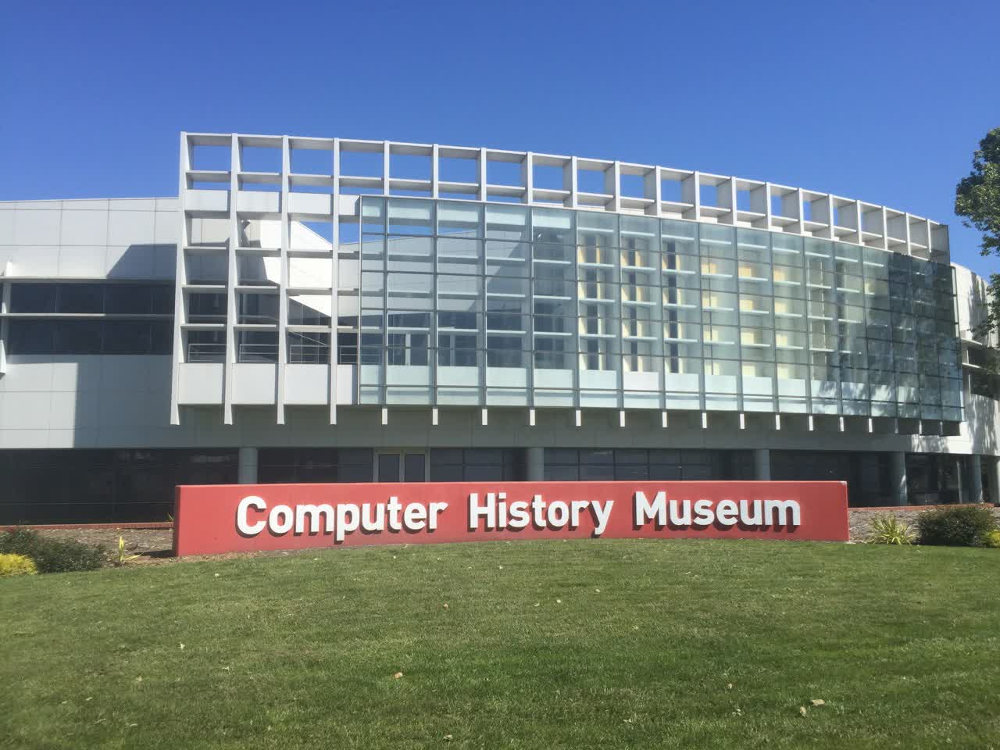
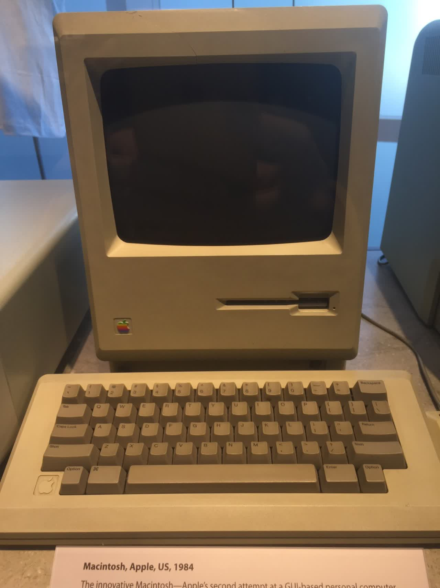
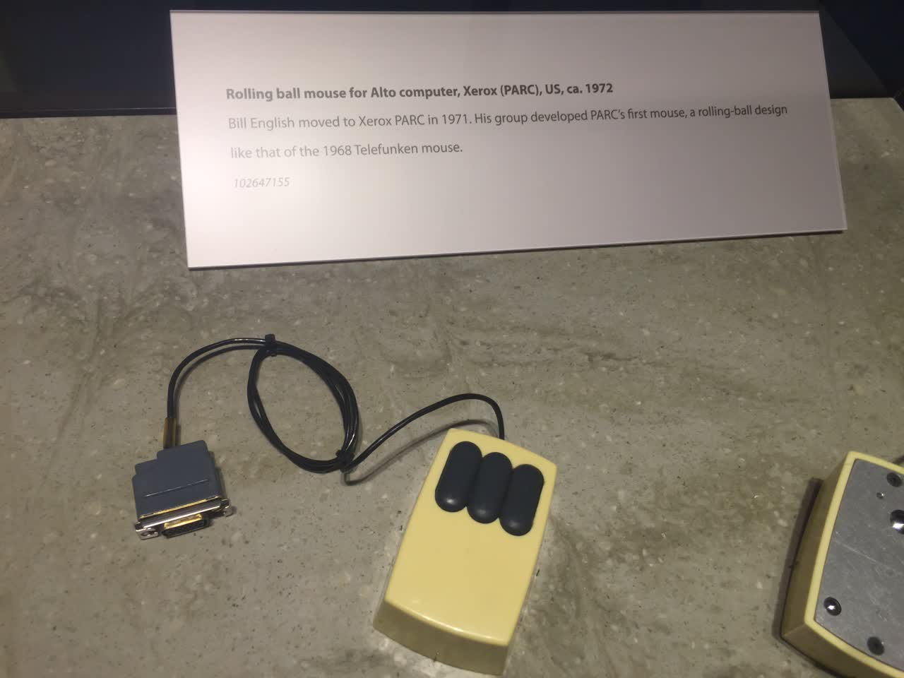

My Trip to the United States | Original, translated by AI
This blog post was translated by ChatGPT.
From March 14 to April 1, I spent half a month in the United States. I visited Stanford University, Google, the Computer History Museum, and the Y Combinator incubator. I saw the masterpieces created by the immense curiosity and effort of the predecessors, watched groups of elites enter Google’s buildings to provide the best services to the world, observed graduate students at Stanford’s Gates Building delving into cutting-edge academics, and witnessed hundreds of restless young people at YC working on their startups. Then I went to San Francisco, where I saw many homeless people and frequently heard sirens, which made me feel uneasy. I met the Chinese entrepreneurial team Mailtime in Silicon Valley, helped them fix some bugs, and experienced working in Silicon Valley. I watched an NBA game and saw Curry and Paul up close. I also visited the WWII hero, the USS Hornet aircraft carrier. Additionally, I explored Union Square, the De Young Museum, the California Academy of Sciences, University Avenue where many companies were founded, the Golden Gate Bridge, and Baker Beach. Within three kilometers of where I stayed, I checked out the headquarters of Twitter, Uber, LinkedIn, and Slack, as well as nearby companies like GitHub, Pinterest, Docker, Amazon, and Dropbox, although I didn’t visit all of them.
Influenced by friends and my own aspirations, I had longed to visit Silicon Valley. On the afternoon of March 2, I suddenly had the idea to go to the United States, so I promptly filled out the necessary forms. Twelve days later, I was in the U.S., exploring for half a month and spending a total of 20,000 RMB. This experience greatly encouraged me; things that once seemed difficult were now easily accomplished. Previously, I was curious about what a visa was and thought I needed to save more money before going.
I am grateful to Xuehui, Xuehui’s roommate, the Mailtime team, and Alex for their help throughout the journey. I also met many people along the way: every Uber and Lyft driver, every Airbnb host, every person who gave me directions or helped me with public transportation, my seatmates on the plane, and everyone I met in cafes, campuses, streets, malls, trains, and buses. Thank you all.
“Going to the U.S. Can’t Be Delayed Any Longer!”
After getting a U.S. tourist visa in three days, I received my passport with the visa on March 9. I booked a flight for March 14 and headed to the U.S. It was my first time abroad, and I was a bit excited. But I knew that I didn’t need to bring much. I packed a couple of clothes in my crossbody laptop bag and carried a backpack with my laptop. I exchanged 3,000 USD at the bank, but it turned out I didn’t need much cash; a Visa card was sufficient. With a backpack and a crossbody bag, I set off.
The flight first went to Seattle, then I transferred to San Jose. At Seattle airport, you can take a small subway directly to the boarding gate. Unlike Beijing Capital International Airport, where you usually take a bus to the boarding gate, Seattle has an automated transport system without drivers. These automated carriages transport passengers between boarding gates. It was impressive; I didn’t expect an airport could operate this way.


It felt like being in a company where all testing and deployment were automated. Only outstanding people could come up with such solutions, and relevant institutions were willing to adopt them.
I had to wait six hours for my connecting flight, so I grabbed something to eat at Burger King. The service staff there were very enthusiastic. The lady at Burger King would joke with each customer, making you feel like an old friend. Maybe it’s because of the fierce competition; everyone strives to do their best, so the employers demand enthusiastic customer service. In fact, ordinary people there were very friendly, so it’s not surprising that the service staff were too.
Once in San Francisco, I didn’t know how to take the metro and bus from the same place. I saw two guys and showed them where I wanted to go on my phone. They told me to take the metro downstairs. I followed them, and they entered the ticket gate while I went to buy a paper ticket. They waited for me for half a minute, but I still hadn’t finished buying it. I told them to go ahead. They then told me to go downstairs after the ticket gate and take the train from the opposite platform. I thanked them, and they left.
In Beijing, when I was picking up my plane ticket, I met a girl. We saw each other again while waiting for the flight in Seattle and chatted for three to four hours. She was a nurse returning from a trip to Thailand. Her catchphrase was “It depends.” For many things, such as the current state of entrepreneurship in the U.S. and differences between the U.S. and China, I was very straightforward, seeing things in black and white, while she had a more comprehensive understanding. She used iMessage a lot. After 20 days in the U.S., I found that iMessage for Americans is like WeChat for us, probably because everyone uses iPhones, and iMessage uses data.
Stanford and University Avenue
Looking down at Silicon Valley, it was beautiful and the houses seemed orderly. After arriving, Xuehui, my former teaching assistant from Beijing Forestry University who later went to Peking University for graduate school and now works at Google, picked me up in a rented BMW, costing about 300 dollars a month. His house, shared with his college friends, felt like a villa with a garage on the first floor, a living room and kitchen on the second, and three bedrooms on the third. It was comfortable and spacious.
We had breakfast at Google. Having previously dined at Microsoft Research Asia because my former company was part of the Microsoft Accelerator, I thought it was good, but Google was even better. After eating, the place to put trays rotated, making it easy for staff to collect and clean them. I was amazed. Google’s parking lot already had charging stations, indicating the imminent arrival of the electric car era.



Then, I took an Uber to Stanford University for about 10 dollars. Chatting with the Uber driver, a Latino, he said that startups were everywhere in Silicon Valley. He believed that citizens should be prohibited from owning guns, as they could encourage some people to act recklessly. Here, I’d like to recommend using a Visa card again, which can be linked to Uber.


I struck up a conversation with a Chinese student studying biotechnology at Stanford for his graduate degree. He was looking for a place to study. After he found a spot, I wandered around and decided to visit the computer science building funded by Bill Gates.

The hallways were filled with various electronic devices.




They seemed so smart and had a profound understanding of education. At my university, Beijing Forestry University, although our teaching buildings had some displays introducing forestry professionals, they were nothing compared to Stanford. In Gates Hall, every corridor and cabinet was an exhibition. What would the new generation of young people think when they see these?
I wandered through the entire building, seeing rooms with students coding and discussing, and hallways lined with their research papers.




I had heard of two Chinese PhD students here, Danqi Chen and Qiufeng Chen. Both had won gold medals in the International Olympiad in Informatics during high school.
I couldn’t help but think about my future. They were researching cutting-edge technologies, like simulating real movement with images. I suppose the technology for games like FIFA comes from universities. I dropped out of college early and embarked on an entrepreneurial path. Paul Graham said the best preparation for entrepreneurship in college is to immerse yourself in the future and stand at the forefront of your field. The key to entrepreneurship is becoming an expert in your domain, like Google’s founders were search engine experts. Business aspects can be learned quickly once you start a business.
Next, I went to Hoover Tower to get a bird’s-eye view of Stanford’s campus.


Many of the colleges here are world-class, and many professors are top-notch. These institutions cultivate societal leaders who donate back to the school, building educational facilities that influence the next generation to become societal leaders, creating a virtuous cycle.
I then strolled down University Avenue next to Stanford. No. 165 is the famous “lucky office” where Google and PayPal were born. At a pastry shop, I met a guy who was the CEO of a Series C company
, Bevy, visiting from Boston for meetings with investors.


The last two pictures show a very lively place, seemingly filled with investors and entrepreneurs. It’s said that a good way to distinguish them is that investors lean back while entrepreneurs lean forward. Why are there so many investors and entrepreneurs here? Is it because investment firms are nearby, or are there just many entrepreneurs here?
In the evening, I stayed at an Airbnb hosted by a local who had lived there all his life. He said he knew about Steve Jobs since Apple’s IPO in 1980 and watched Apple’s growth. He said technology is a young person’s game, requiring a lot of energy. It was amazing to be in the same town as Jobs, hearing about his achievements firsthand, greatly encouraging anyone interested in technology. When I was a kid, after the launch of Shenzhou 6, I was very excited and dreamed of becoming an astronaut. Even though Shenzhou 6 launched in Shaanxi and I was in Guangdong, it still gave me that ambition. If you are close to such achievements, you hear many firsthand stories, not just news, possibly told by friends who witnessed them.
Google and the Computer History Museum
The next day, I toured Google’s main campus. There were many buildings, but I only visited a few.



Then, I visited the Computer History Museum. From wooden abacuses to mechanical computers, to electronic computers, hard drives, printers, mice, and other hardware, as well as the history of software like Windows 1.0 and Photoshop, games, and graphic technology—all were on display. I was impressed by the long history of American technology, shaped by the passionate contributions of generations over the past century.



The worker above feeds cards into the machine, which sorts them.





Xerox PARC, a legendary institution, invented the graphical user interface, mouse, local area network, laser printing, object-oriented programming, MVC architecture, and bitmap.

Afterward, I had a delicious Italian pasta for lunch.

That’s it for now. In the next update, I’ll talk about the density of famous companies in San Francisco, their salaries, my experience of living in San Francisco for 10 days, and some insights from visiting the USS Hornet aircraft carrier.